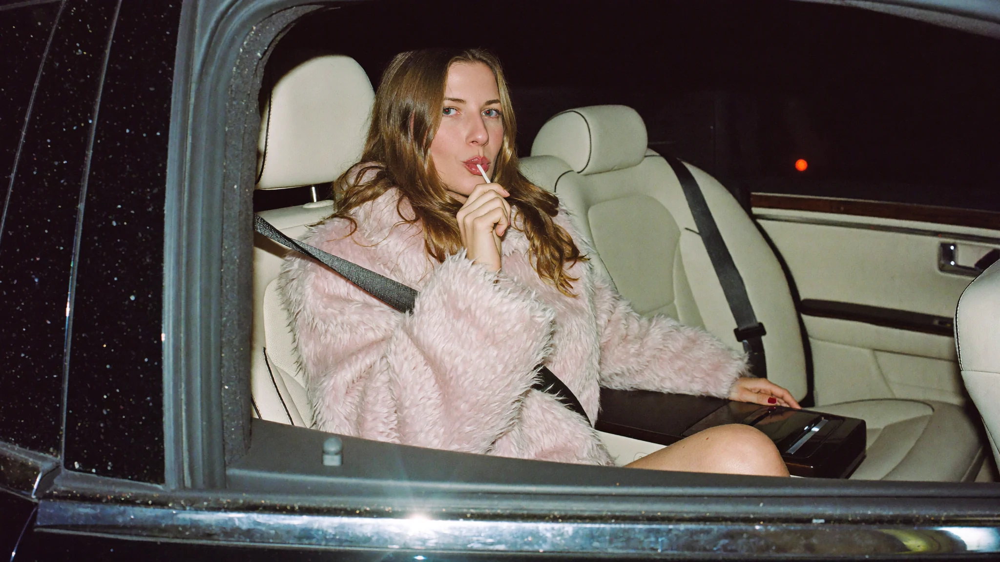
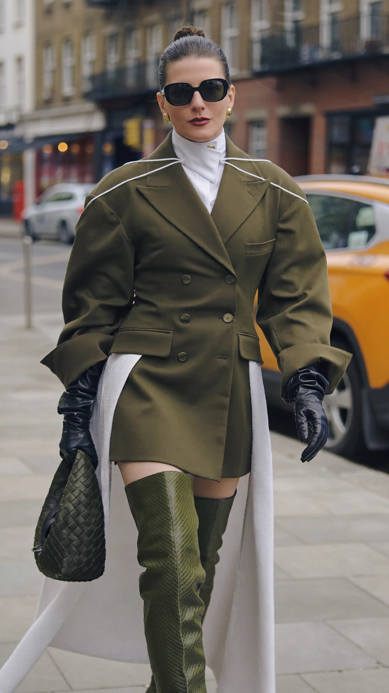
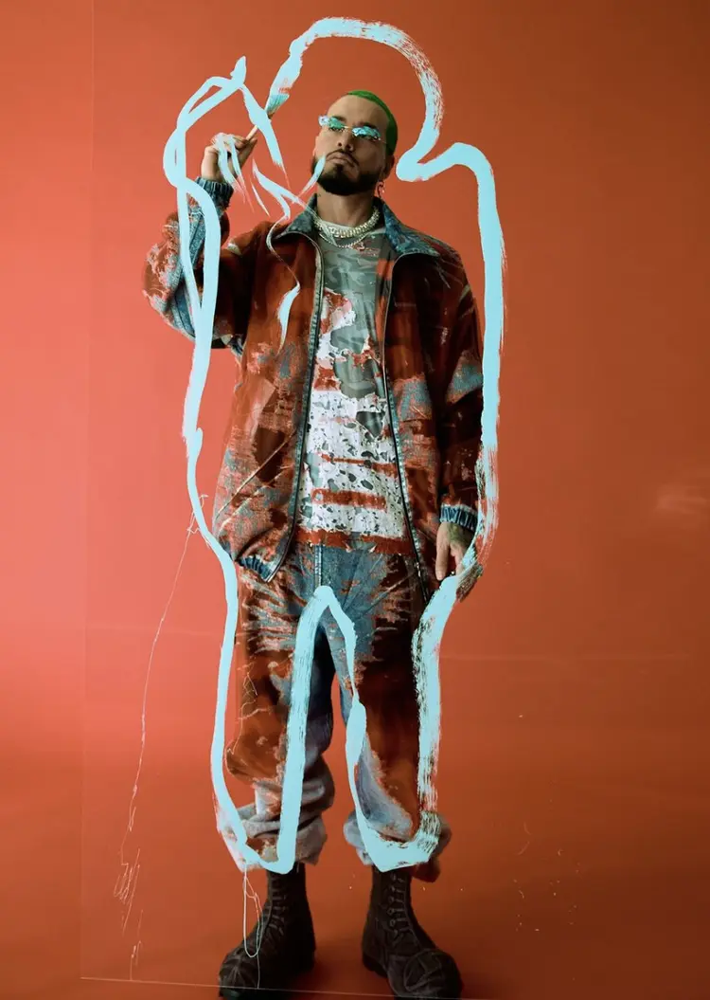
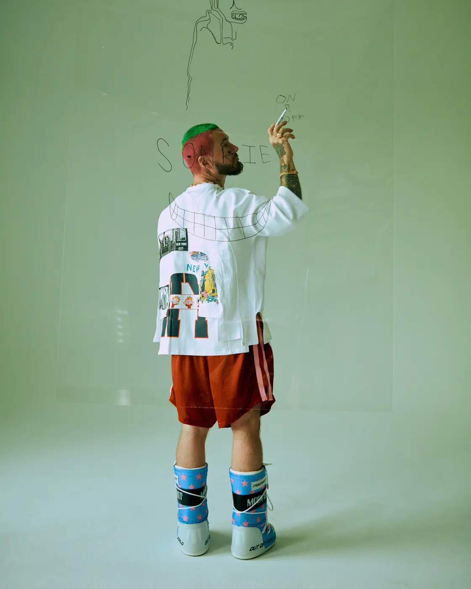
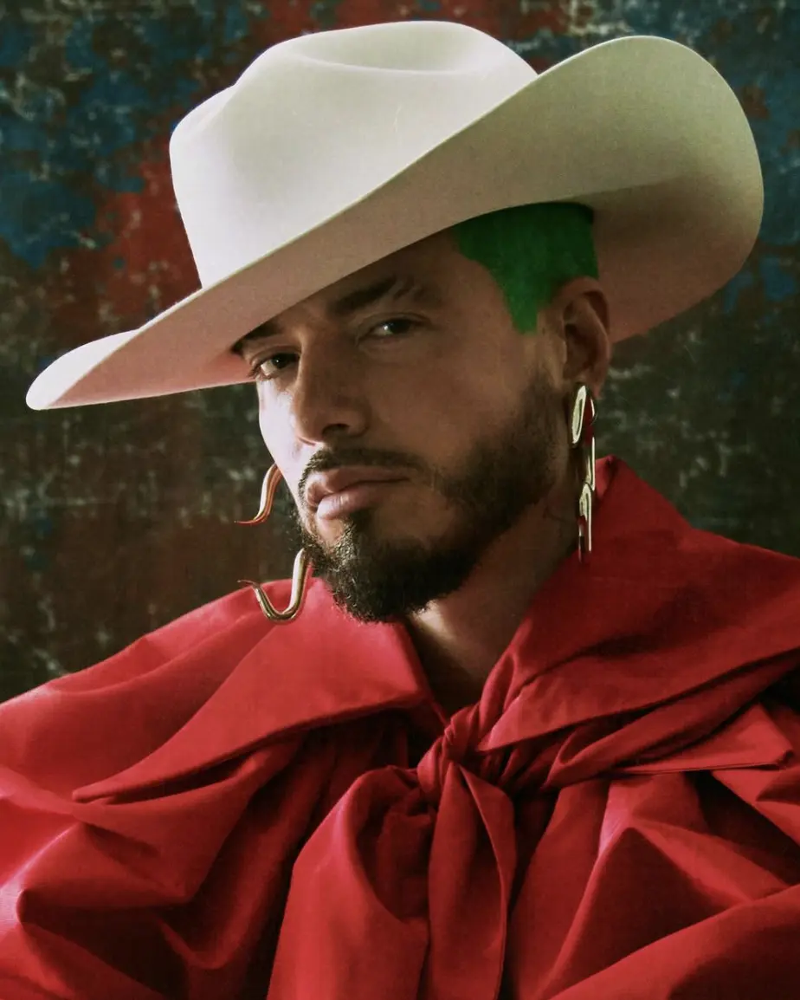

01 / BalenciagaSpring 22
Spring 22
Campaign
Balenciaga / Campaign FilmWatch on YouTube ↗

Parallel Vision / Visual Art
Profile / 01

Julia Payne is a Berlin-based conceptual artist and designer working across large-scale installation, spatial design, fabrication and production design.
After working in New York for nearly two decades, her practice now connects physical construction with performance, fashion and nightlife. With a background in architectural design, she approaches space as an active part of the work: structure, material, light and bodies are composed as one environment.
Within Parallel Vision, Julia is represented for site-specific installations, stage environments, spatial commissions and collaborations between visual art and sound.
Selected Visual Work / 02
Set · Production · Spatial Design
New York Post / Alexa Magazine
Set design for J Balvin’s cover story, bringing painted surfaces, sculptural garments and constructed environments into one visual language.



Selected Installations / 03
Space · Material · Performance
Spatial and stage design for Wehrmühle’s Berlin Art Week closing party with Nina Kraviz. An industrial-steel stage, corrugated-metal canopy and suspended translucent fabric transformed an empty Friedrichstraße courtyard.
Installation for Trouble² at Rasa86 during Amsterdam Dance Event, presented within a twelve-hour programme connecting distinct regions of electronic sound.
Documentation / 04
Artist Channels / External